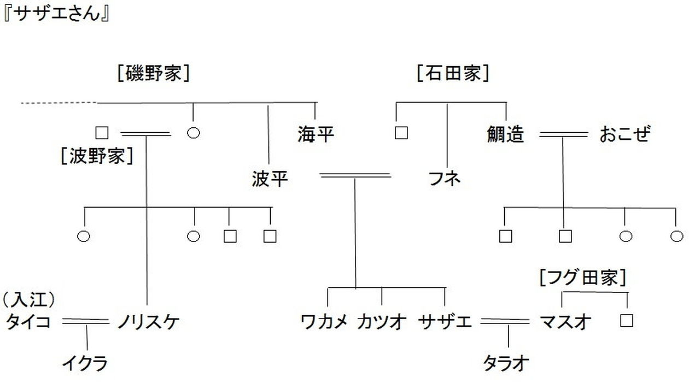
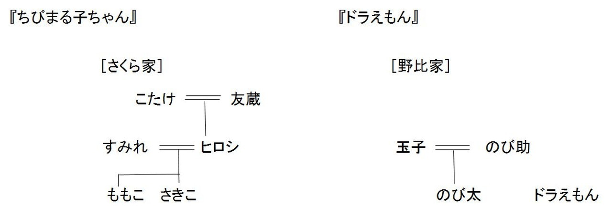
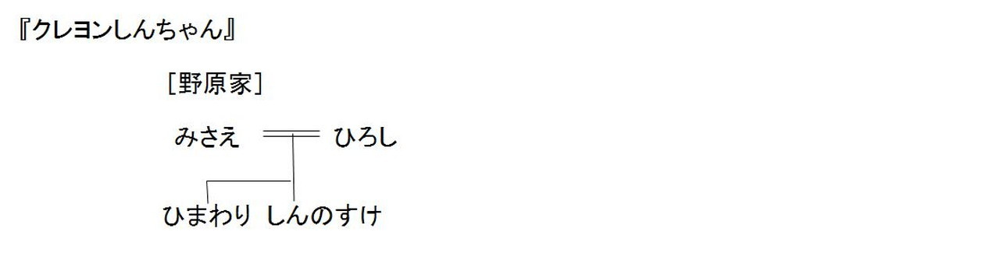

| 4つのマンガが教えてくれる 日本の家族ヒストリー | |
| 名和 久仁子 | |
| pubfull (2017) | |
４つのマンガが教えてくれる
日本の家族ヒストリー
名和 久仁子
日本国民が接してきた数多くのマンガ。その中でも、『サザエさん』『ちびまる子ちゃん』『ドラえもん』『クレヨンしんちゃん』は、年代を超えてたくさんの人々に愛され続けてきた。一体なぜ、この作品たちは長年人々を魅了してやまないのだろう。
笑える、泣ける、楽しめる、そんなマンガに描かれた家族模様に私たちはどこか親近感を覚えている。おじいちゃん、おばあちゃん、お父さん、お母さん、きょうだい、そして私。マンガの中で生きる人々に、私たちは自分自身の家族を重ね合わせているのかもしれない。
実は、これらのマンガを読み解くだけで、時代の流れとともに変化する家族や、その背景にある社会のあり様や当時の考え方が見えてくる。ちょっと視点を変えて、マンガの中の家族を眺めてみよう。
戦後、日本の家族はどう変わってきたのか。そして、これからどう変わっていくのか。
家族の社会学が、身近なものに感じられる異色マンガ読本。
しばしのお付き合いを。
本文に入る前、少しばかり、自己紹介をさせていただきます。
私は、1954年生まれの62歳。熊本在住。現在、福祉の専門学校で教員をしております。
25歳で結婚し、娘2人と息子、3人の子の母となりました。娘2人は結婚し、それぞれ3人、2人の子を儲けましたので、今では5人の孫のおばあちゃんでもあります。
子どもたちが独立した後は、主人と二人で静かな（？）毎日を送っているところです。
専門学校では、社会学を軸に、社会福祉や家庭福祉、社会調査等を担当してきました。また、週数回は、他の学校でも非常勤講師として社会学を教えています。
今回は、私の講義の中でエピソードとして話してきた内容を中心に、家族社会学の一端をご紹介しようと思います。
家族について、興味深く見直すきっかけにしていただければ幸いです。
さて、これから、『サザエさん』、『ちびまる子ちゃん』『ドラえもん』、そして『クレヨンしんちゃん』で描かれた家族について、それぞれ具体的に見ていこう。まずは、『サザエさん』から。
サザエさんは、24歳。お見合いで4歳年上のマスオさんと結婚し、フグ田サザエさんになった。専業主婦で、3歳のタラちゃん（タラオくん）のお母さんでもある。サザエさんは実父母と同居している。名前は磯野さん。父親の波平さんは54歳で、定年を間近にひかえているサラリーマンだ。母親のフネさんは50ゥン歳（52歳）になる専業主婦である。静岡の石田家から嫁いできて、3人の子どもの母となった。
註）登場する人々の現在の年齢は、原作とは異なる場合もある。ちなみに、原作では、サザエさんは27歳、マスオさん32歳、フネさんは48歳である。
ここでは、現在のアニメで設定されている年齢を使用することとしたい。
この家族には、年の離れたサザエさんの弟・妹がいる。弟のカツオくんは、小学校5年生の11歳。妹のワカメちゃんは、小学校3年生で9歳だ。二人とも「子どもらしい子ども」として、今でも色あせない個性を持ち、皆に愛され続けている。
不動の人気のある『サザエさん』は、アニメ化され、現在も夜6時台のテレビ放映が続いている。
ただ、お話の筋はともかく、サザエさん一家にはある種の違和感が伴う。
まずは髪型。サザエさんの髪は、まねしようとしてもなかなか出来そうもないカール三段重ねになっている。マスオさんは七三分け。波平さんの頭の上には、決して抜けない丈夫な髪が1本だけピンと立つ。フネさんは、ひっつめ髪で、後ろに髷を結っている。カツオくんは、丸刈り。そして、ワカメちゃんは、刈り上げのおかっぱ頭だ。
服装もしかり。サザエさんは、時代を問わず常にひざ下ミモレ丈スカートに白のソックスだし、50歳代の波平さんとフネさんは、二人とも家では着物姿である。カツオくんがはいているのは短い半ズボン。ワカメちゃんのスカートは超ミニである。ついでに、白猫のタマは見たこともないような巨大な鈴をつけた首輪をつけている。
どの髪型も服装も「ないわけではない」けれど、今の時代と年齢には、合っていない。
また、家族自体も、現代では殆ど見られない構成である。
磯野さんの家では、磯野家の4人とフグ田家の3人、計7人と猫1匹が一緒に暮らしている。いわゆる、「親と未婚の子ども、そして結婚した子どもの家族などが同居する」という「拡大家族」と呼ばれる形態である。しかしながら、現実には、結婚し姓を変えた娘夫婦家族が、その親と同居することは珍しい。マンガのおかげで、妻の親と同居する夫のことを指して、「マスオさん状態」・「マスオさん現象」などという言葉まで生まれたほどだ。
では、何故この家族がこれほど皆に受け入れられてきたのか、時代背景とともに見てみよう。
『サザエさん』は、長谷川町子さん（1920-1992）の4コマ漫画で、1946年、福岡の地方新聞に掲載されたのが始まりである。その後、人気は衰えることなく、とうとう長期の連載となった。長谷川さんが亡くなられた後も、アニメ『サザエさん』は放映され、そして現在も続いている。
漫画の始まった1946年（昭和25年）は、第二次世界大戦が終了した直後だ。時代から見ると、あの皆の髪型は'最新モード' だった。サザエさんの髪型は、当時「モガヘアー」と呼ばれていたものである。モガヘアーは、モダン・ガール・ヘアーの略。パーマネントをあて、前髪を大きくカールさせた髪型は、当時はとても素敵に映ったようで、多くの女性の支持を得た。マスオさんの七三分けも、フネさんのひっつめ髪も、カツオくんの坊主頭も、ワカメちゃんの刈り上げおかっぱも、結構トレンディだったのだ。
服装も同じである。長いスカートや着物、子どもたちの短すぎるズボンやスカートも、時流に乗ったものだったと言えよう。戦後直後の生活の中で、あの髪型・服装は、「当たり前」で、しかも「最先端」をいっていたのである。
私は昭和29年の生まれですが、幼いころ（昭和30年代）を思い出しますと、確かに『サザエさん』の描写と重なります。
母はくりくりのパーマをかけていましたし、父は七三分けで、ポマードを愛用していました。周りの男の子は坊主頭も多く、女の子は、前髪ぱっつんのおかっぱ頭が主流でした。同居していた祖父は、バーコードにした波平さんの頭。祖母は、フネさんそっくりのひっつめ髪でした。
母方の祖母は、短いパーマをかけていましたが、自宅に出張のパーマ屋さんが来て、アイロンごてを当てて祖母の髪をセットしていたことを記憶しています。
もちろん私も、小さいころは、おかっぱで、後ろをバリカンで刈り上げられておりました。小学校に入ってから、女の子の間で、少しおしゃれな「乙女刈り」という髪型が流行りました。
『サザエさん』に出てくる人の服装も、また馴染み深いものがあります。この当時30代だった私の母は、家で、洋服と着物の双方を着ていました。洋服の時は、もちろん長めのスカートです。
60代だった祖父母は、共に、家では着物が普段着でした。とても地味な暗い色の着物が多く、今思うと、年齢よりずっと老けてみえました。
ただ、このマンガを通して見えてくるのは、当時の人々の装いだけではなく、戦前の家父長制が基本にある「イエ意識」の色濃く残った家族の様相である。
家族が7人というのも、当時はそれ程の「大家族」だった訳ではない。
波平さんの妹さん（なぎえさん）の子どもは8人きょうだい（アニメでは5人）だし、フネさんの兄さん（鯛造さん）の子どもさんも4人である。ほぼ同世代を生きていた私や主人の祖父母も、みな7人から9人きょうだいだ。今でいう「大家族」は、ごく一般的な家族だったのである。
また、そのような多くのきょうだいをかかえる家族では、当然ながら上の子と下の子の年齢差も大きかったはずで、サザエさんとカツオくんの年が13歳違い（原作だと16歳違い）と設定されたのも頷けない話ではない。ひとまわり以上も離れているきょうだいなんて、今でこそ非常に珍しくはあるが、その当時を生きた人々には何ら違和感はなかったのだ。
親戚間の付き合いも多く深く、なかなか楽しそう（大変そう）である。波平さんの妹さん（嫁いで、波野なぎえさん）の子ども8人の中の三男ノリスケさん（25歳）は、奥さんのタイコさん（22歳）とイクラちゃん（1歳半くらい）との3人暮らし。しばしば磯野家と交流している。
磯野家をはじめとした周りの人たちはそれぞれ穏やかな性格で親戚間の揉め事も皆無だ。家長を中心にまとまった、いつも楽しく明るい家族、という感がある。
余計なお世話だが、総じてうまくいっているかに見える磯野家において、例えば、娘婿のマスオさんが「とっても個性の強い人」だったり「主張する人」だったとしたら、即別居になってしまっただろう、と思う。
時代の流れに沿って描かれた平和で和やかな『サザエさん』は、当時の人から多くの共感を得て不動の人気を誇ったのである。ただ、今では珍しくなったこの家族のあり様が、現在でも'アニメとして' であれ日本人に受け入れられているところは、誠に興味深い。
ここまで、戦後から高度経済成長期にかけての設定で描かれたサザエさんの家族について見てきたが、それ以降の家族は、マンガの中でどう表現されてきたのだろう。1970年前後から1980年代にかけては、数多くの人気マンガが世に出され、その中で多くの家族が描かれてきた。次に挙げる『ちびまる子ちゃん』や『ドラえもん』などである。
『ちびまる子ちゃん』のさくら家は6人家族だ。描かれているのは1970年代中期の日本である。主人公のももこちゃん（ちびまる子ちゃん）は1965年生まれの8歳（小3）。上にさきこちゃん11歳（小6）というお姉ちゃんがいる。お父さんのヒロシさんと、お母さんのすみれさんは、それぞれ40歳。ヒロシさんは、友蔵さん（1898年生まれ・76歳）とこたけさん（1904年生まれ・70歳）の長男だ。さくら家は、三世代同居の「拡大家族」である。
『ちびまる子ちゃん』は、さくらももこさん（1965-）の漫画で、1973年に少女雑誌「りぼん」で掲載されたのが始まりだ。1973年は、オイルショックがあり、日本の高度経済成長が終焉を迎えた年でもあった。そのような時代を生きた女の子の日常を、コメディタッチで描いた『ちびまる子ちゃん』は、人々に愛され続け、現在でも不動の人気を博している。
『ちびまる子ちゃん』に出てくる人々の外見は、先の『サザエさん』に見られるような現代との大きな差はない。ヒロシさんやすみれさん、子どもたちの髪型や服装は、確かに古くはあるが、今でも十分「ありうる」。しかしながら、やはり現代とは異なる部分もあるようだ。最も違和感を覚えるのは、おばあちゃんのこたけさんだろう。
こたけさんは、いつも地味な着物を着て髪を結っているが、まだ70歳の若さなのである。だが、こたけさんが生まれた年は1904年（明治37年）という設定なので、当たり前といえば当たり前の格好だといってよい。ちなみに、『サザエさん』の磯野フネさんは、1901年（原作）生まれとされているから、こたけさんとほぼ同年となる。
『ドラえもん』に出てくる野比家は、3人の核家族。プラス、ドラえもんである。1964年生まれののび太くんは10歳（小４）で、のび助さん（39歳）と専業主婦 玉子さん（38歳）の一人息子だ。野比家は、「夫婦とその未婚の子」からなる「核家族」である。
友達の家族も同様の家族形態で描かれている。ジャイアンの家は、お父さん・お母さん・妹のジャイ子、そしてジャイアンの、夫婦と子ども2人の「核家族」。スネ夫くんとしずかちゃんの家は、夫婦と子ども１人の、これも「核家族」である。
藤子・Ｆ・不二夫さん（1933-1996）によって1969年末から連載が始められた『ドラえもん』だが、時代背景としては『ちびまる子ちゃん』と同じ1970年代半ばの想定である。生年月日から見ると、のび太君は、まる子ちゃんの1歳上ということになる。ほぼ同時代を生きるのび太くんとまる子ちゃんだから、登場人物の様子も重なって見えるのだ。
お母さんの野比玉子さん・さくらすみれさんは、二人ともショートヘアで、常時長めのスカートをはいている。のび太くんは、髪は短め、服装は基本紺色半ズボンに白のソックス、白のシャツに黄色のセーターが多い。女の子たちの服は、ほぼ皆スカートである。今では、お母さんたちもパンツ姿が多くなったし、子どもたちも長めのボトムスが主流となり、短いズボンや超ミニのスカートは殆どはかなくなったから、若干の時代のズレは否めない。しかし、皆、おばあちゃん世代の常時和服着用に比べたら、それほどインパクトのあるズレではないようにも思われる。
さて、ここまで、1960年代の高度経済成長期に生まれ、1973年のオイルショックを経験してきた世代のまる子ちゃん・のび太くんたちについて書いてきた。それぞれのマンガは、全く違うものではあるが、時代背景とともに見ていくと、様々な共通点も見えてくる。
生活に密着した髪型や服装しかり。家族の構成しかり、である。この時代に描かれた家族では「核家族」が多いこと（ちびまる子ちゃんを除いて、皆「核家族」）、お父さんが働いて、お母さんが専業主婦であることも、共通するものとして挙げられよう。
【家系図】



実は、彼らとほぼ同年代に「生まれた」世代のキャラクターに、野原ひろしさん、みさえさん夫婦がいる。『クレヨンしんちゃん』に描かれたしんのすけくんのお父さん・お母さんだ。まる子ちゃんやのび太くんが大きくなって結婚したら、野原夫妻と同じくらいの年代になるということである。
彼らは、その後、一体どのような家族を作っていったのだろう。
次に、次世代にあたる『クレヨンしんちゃん』の家族について見てみよう。
しんちゃんの家族は夫婦とその未婚の子どもからなる「核家族」である。
1990年に出された『クレヨンしんちゃん』は、1992年にアニメになって放映が開始された。ここに登場する家族が、野原さん一家だ。当初、野原家はお父さんのひろしさん（35歳）、お母さんのみさえさん（29歳）、そして長男のしんのすけくん（1987年生まれ、5歳）の3人家族だった。その後、1996年に長女ひまわりちゃんが生まれ、一家は4人になっている。しんちゃんをはじめ、みな歳をとらず、2010年まで楽しい家族としてマンガの中で生き続けた。また、テレビ朝日が1992年からアニメを開始し、現在も続いている。
臼井儀人さん（1958-2009）によって連載漫画として始められたこの『クレヨンしんちゃん』は、子どもたちの心を掴みロングセラーとなった。マンガに出てくる子どもたちや大人の格好は、決して現代風というわけではないが、何の違和感もなく受け入れられている。
しんちゃんはイガグリ頭で、友達のマサオくんも坊主である。ボーちゃんは短髪。そして、トオルくんは、長髪でちょっと優等生感が漂う。仲良しのネネちゃんは、二つ結び。ズボンやスカート、Ｔシャツ・トレーナーの組み合わせは、定番の子供服である。また、大人のヒロシさんは短めのカール（天然？）頭、みさえさんはセミロングのボリュームのあるパーマで、服装は無難なものになっているといってよいだろう。他の作品との違いはというと、最近のみさえさんが、ほぼパンツルックだといったところか。
みさえさんの髪型は、1990年前後に流行ったソバージュのようだ。当時の最先端、と考えると、サザエさんのあのモガヘアーと重なるところがある。描かれた世界は、当時そのものなのである。
この『クレヨンしんちゃん』には、野原夫婦から「バカップル」と称される 鳩ケ谷ヨシりん・ミッチー夫妻が登場する。彼らは野原家の裏にある一軒家に住む若夫婦である。いつもハートマークがついたペアルックを着てラブラブなこの二人には、子どもはいない。ペアルックは、1980年代に若者に流行したファッションであり、90年代のしんちゃんの時代には若干時代遅れだったと思われるが、バカップルだからこその服装として描かれているということなのだろうか。紹介しているマンガの中では初めて登場する「子どものいない若夫婦」だ。
野原家にしても鳩ケ谷家にしても、夫婦の関係は友達のような関係にみえる。夫婦間のやり取りが、サザエさんの磯野家の波平さん夫妻とは全く違っているといってよいだろう。細かな人間関係について眺めていくと、やはり、時代の移り変わりを感じざるを得ない。
さて、ここまで、『サザエさん』『ちびまる子ちゃん』『ドラえもん』そして『クレヨンしんちゃん』と、国民に長く愛されてきたマンガを順に見てきた。
並べてみるとわかるように、登場人物の髪型や服装といった外観の変化とともに、家族のあり様も徐々に変化してきたことが読み取れる。家族形態を見ると、『サザエさん』の磯野家、『ちびまる子ちゃん』のさくら家は、直系の「拡大家族」だが、『ドラえもん』の野比家、『クレヨンしんちゃん』の野原家は、夫婦とその未婚の子からなる「核家族」である。そして、鳩ケ谷夫妻も、夫婦のみの「核家族」となる。
【 核家族・拡大家族 】
J．マードック（米・人類学者）による家族類型。
・核家族 nuclear family：
人類に普遍的に存在する家族の基礎的単位。
一組の男女とその未婚の子で構成される家族。その過渡的状態として捉えられる夫婦のみの家族。父親または母親とその未婚の子で構成される家族。
・拡大家族 extended family：
子が結婚後も両親と同居することによって、複数の核家族で構成される家族。
戦後の家族の変遷を表す言葉の一つに、「核家族化」が挙げられる。マンガの中の家族形態も、時代順に見ると、確かに「核家族」が主流になってきているように感じられる。
だが、この「核家族化」という言説は、本当なのだろうか。
実は、世帯の統計を調べてみると、現状とは異なっていることに気付く。厚生労働省の『国民生活基礎調査』を見ると、「核家族」世帯は、1920年（大正9年）には55％ もあり、過半数を越していたことがわかる。サザエさんの時代でも、家族の多くは「核家族」世帯であったということだ。1960年代の高度経済成長期に「核家族」は増加し、1975年には64％ にまで数値を伸ばした。それでも、割合からいうと9％ の変化でしかない。その後、「核家族」世帯の割合は、減少の一途を辿り、2015年では60.2％ になっている。逆に増加し続けているのは、一人暮らしの「単独世帯」（同年26，8％ ）である。
「核家族化」というと、あたかも戦後「核家族」の割合が急増したかのような印象を与えるが、そうではない。時代の変遷とともにマンガから拡大家族が姿を消し、核家族が増えて来て、それで「核家族化が進んだ」ように感じるのは、マンガから受ける印象に過ぎないことがわかる。
実は、この「核家族化」は、家族の理想像の移り変わりを表す言葉としてとらえる方がわかりやすい。後であらためて述べるが、戦前のイエ制度の中では、「直系拡大家族」が理想とされる家族の形態だったのである。まさに『サザエさん』の磯野家は、その理想像と言ってよいだろう。戦後このイエ制度は終焉を迎え、新たな家族像が理想となった。それが夫婦家族制であり、形としては「核家族」だったのだ。
その時代における家族の理想像は、色濃くマンガにも反映されている。つまり、「拡大家族」から「核家族」へと理想像が変化した中で、マンガに出てくる家族像もそれに合わせて描かれてきたのだ。
ただ、この時代の流れの中で、現実には、高齢化によるお年寄りの介護の問題、女性の社会進出、少子化、過疎化と都市化、等々におけるさまざまな問題が山積していったのである。
さて、ここまで、時代とともに変化する登場人物の外観と当時の風俗について眺め、また、描かれる家族の構成が、徐々に変化してきたことにも言及してきた。
戦後すぐに描かれた『サザエさん』は、戦前の家族の状況が色濃く残っているマンガである。だが、高度経済成長期が背景となっている『ちびまる子ちゃん』『ドラえもん』から1990年代の『クレヨンしんちゃん』まで順に並べて見ていくと、家族の様相が明らかに変わってきていることがわかる。
娘一家が遊びに来た折、マンガの家族の話になりました。
『サザエさん』のアニメに親しんでいる小学校2年の孫娘に、（母である）娘が尋ねます。
「ねえ、カツオくんのお母さんって誰だかわかる？」
「え〜？？？」
首をかしげる孫娘。
「さぁ、誰でしょう。」
「う〜ん、と。......サザエさん？」
「ぶぶ〜。フネさんっているでしょ？あのフネさんが、カツオくんのお母さんだよ〜。」
「え〜！！！フネさんって、おばあちゃんじゃないの？」
「お母さんだよ〜。で、波平さんが、お父さん。」
「え〜！！！」
「サザエさんは、カツオくんとワカメちゃんのお姉さん。サザエさんとカツオくんとワカメちゃんは、三人きょうだいなんだよ〜。」
「え〜！！！」
目をまん丸くして驚き続ける孫娘を前に、周りの皆は大爆笑。
「そういえば、カツオくんがサザエさんのこと『ねえさん』って言ってた。」
と、最後は納得の孫娘でした。
今の小さい子どもたちに、あの『サザエさん』の家族関係を理解するのは、なかなか難しいことなのかもしれません。
余談になりますが、この話題の後、私の主人（63歳）が、タラちゃんをずっと女の子だと勘違いしていたことが判明し、またまたびっくり。
「タラちゃんって、どうみても女の子でしょ。」と主人。
「え〜。タラちゃんって、タラオくんだよ。」
「そんな、ちゃんとした名前なんて、わからんよ。」
............
マンガは、どうも「じっくり、しっかり見られるもの」という訳ではないようです。
さて、次に、少し視点を変えて、現実の統計と照らし合わせながら、家族の規模の変化について見てみよう。
一連のマンガの推移を見ていくと、家族の規模がうんと小さくなっていることに気付く。サザエさんの家族は7人、ちびまる子ちゃんの家族は6人だった。いわゆるおじいちゃん・おばあちゃんが同居する直系三世代拡大家族である。時代が進むとともに、家族の人数は減り続け、のび太くん(ドラえもんも入れて)の家も、しんちゃんの家もいずれも4人家族、二世代核家族として描かれている。他に登場するしずかちゃんやスネ夫くんの家は3人家族、ミッチー・ヨシりん夫妻は2人家族である。
先に参照した国民生活基礎調査で「世帯員数」の変化を統計で見ると、1963年（昭和28年）には5.00人だったのが、年とともに減少を続け、2015年（平成27年）には、2.49人となり、ほぼ半分の規模に縮小してきたことがわかる*。
＊ 厚生労働省（2016）『平成27年 国民生活基礎調査の概況』より
マンガに描かれる家族も、この統計を反映するかのように家族の規模を縮小させている。当然ながら、家族の人数が少なくなると、そこでの人間関係の在り方や関係性、家族員同士の接し方、そして会話の内容も、変化してくる。
では、このような急激な家族の形の変化は、何故おこったのだろう。
次章では、制度の変化と家族の移り変わりについて詳しく見てみたい。
日本の家族制度は、戦後すぐ（1947年）の民法改正によって大きく変化を遂げた。それまでの日本の家族制度の根幹であった「イエ制度」「直系家族制」が廃止され、「夫婦家族制」に移行したのである。
「イエ制度」においては、家父長制が基本で、家長である戸主が絶大な権限を持っていた。そして、家督（戸主の身分に備わる権利と義務）が代々受け継がれるように、相続は長子相続制がとられていた。こうして、財産の全てが単独の新戸主に移っていくような仕組みが出来上がっていたのである。家の中で「おじいさん」や「お父さん」は、大きな力を持っていたといってよい。
しかし、日本国憲法が発布されてからは、基本的人権の尊重・男女平等を基本にした考えのもとに、旧来の「イエ制度」は廃止となった。家父長制に変わり夫婦家族制がとられ、男性も女性も同等の権利を有するようになる。相続も、子どもの序列も無くして、均分相続制となったのだ。こうして、「おじいさん」や「お父さん」が持っていたイエを背景にした力は、少なくとも制度上は、無くなったのである。
奇しくも、マンガで描かれる家族の様相も、この変化に沿っている。家の理想の形も、イエ制度を体現するような「拡大家族」から、夫婦家族制度にのっとった「核家族」へと移行していく。『サザエさん』や『ちびまる子ちゃん』に見られる「拡大家族」が理想だった時代は、次第に『ドラえもん』や『クレヨンしんちゃん』に多く描かれる「核家族」の時代へと変化したのである。
ただ、制度が変わったからと言って、人の考え方がガラリと一変するわけではない。この制度の変化は、実際には、緩やかに緩やかに人々の生活や考え方に影響を及ぼしていった。
次に、この緩慢な意識の変化について、マンガの変遷から紐解いてみよう。
戦後すぐの民法改正により「イエ制度」は廃止されたが、その時代を生きた人々は、当然ながらそれまでの価値観の中で生きている。では、波平さんが家長として存在した当時の「イエ」とはどのようなものであったのだろう。
波平さんは1895年、サザエさんは1922年生まれである。そのまま年を重ねていたら、波平さんは122歳、サザエさんは95歳のおばあちゃんとなる。カツオくんやワカメちゃんも80代だ。そういえば『のらくろ』をご存知のおじいさん・おばあさん世代の方が、サザエさんには親近感が強いのかもしれない。
私には、『のらくろ』はほとんど馴染みがありませんが、1931年から連載されたこのマンガ『のらくろ』は、当時の人に絶大な人気を博していたようです。黒犬の「のらくろ」が犬の軍隊で活躍するという話で、当時の社会事情がやはり強く反映されています。
この『のらくろ』の作者・田河水泡さんの弟子が、『サザエさん』の作者・長谷川町子さんということですから、その影響が理解できる気がいたします。
磯野家のカツオくんはいい感じのいたずらっ子で、悪さもするが、波平さんの前では素直に謝る。波平さんとフネさんの部屋では、正座で父親と向かい合う。床の間を背にした波平さんは、何故か「権威があり、偉そう」に見える。「家督」を背負っているイエの重さも伝わってくる。カツオくんは言う。「お父さん、ごめんなさい。」......うつ向きながら、こっそり舌は出しても、言葉は敬語だ。
父 波平さんの生まれは、明治時代である。波平さんの持つ威厳やカツオくんの育て方の厳しさ、そして敬語を使わせる日常も、当たり前といえば当たり前と言えるだろう。また、サザエさんはちょうど第二次大戦時に青年期を過ごしたことになる。きっといろいろな苦労を重ねてきた人なのだと思うと、マンガもまた違った見方ができるものだ。3歳のタラちゃんだって、1940年代中葉以降の生まれで、なんとそのまま成長すれば70歳を超す年齢になるのである。
さて、加えて思い出してみると、フネさんもサザエさんも旦那様や目上の人には敬語を使っているようだ。マスオさんだって、波平さん、フネさんにはきちんと敬語を使う。イエの中での序列がはっきりわかる言葉遣いである。
この序列は、茶の間の食事の風景を見ても明らかだ。丸い食卓を囲んで、上座に波平さん、マスオさん。その横にカツオくんが座る。隣にワカメちゃん、そして、タラちゃんの横にサザエさんとフネさんが並ぶ。一巡してフネさんは波平さんの隣だ。サザエさんとフネさんの位置は、台所に一番近い場所である。
私の幼少の頃（1950年代後半）の我が家は、このサザエさんの家族と重なっています。私の母は、青春時代に戦争を経験した世代です。女学校では「良妻賢母」の教育を受け、男性や年長者に従うという価値観を身に着けていました。日常会話を思い出しても、「お父様、お母様、お食事にいたしましょう。」「あなた、お風呂になさいます？」「そうおっしゃいましたでしょう？」......等々、母は、祖父母や父に対して、こんな丁寧な敬語を使っていたことを思い出します。
食卓を囲む順番も、磯野家と同じで、祖父母を頂点にした並び方でした。祖父や父にはおかずが一品多く、父の「いただきます。」という言葉で、食事は始まります。お風呂に入る順番も、お茶を配る順番も、同じように決まっていました。
「イエ」には、儒教の精神が根付いている。儒教の「夫婦の別」（これは、政治に利用され所謂「男尊女卑」思想につながった）や「長幼の序」の精神は深く浸透し、家の中では家父長である「おじいさん」或いは「お父さん」が序列の最上位に置かれることになった。序列からいうなら、その下に「男の子」「おばあさん」、そして「お母さん」「女の子」が続く。小さな集団の中でも、上下関係は厳しく守られ、秩序が保たれていたと言ってよい。
サザエさんの家族には、この儒教精神に基づいた「イエ意識」が根底に流れている。家族関係を読み解くとき、戦前の制度の中で生きた人々の感覚を忘れてはいけないだろう。年代を経ても年をとらないまま、時代を生きるマンガに出てくる人々だが、やはり生まれたときの価値観や行動、生活様式を引きずっているのは仕方がないということである。
ただ、そのような序列があるからと言って、女性や子どもたちの存在感が薄く、上からの重圧に耐え忍んでいるというような悲壮感が漂っているような描き方はされていない。むしろ、力のバランスという点からいえば、どこか裏で締めているのは、フネさんやサザエさんであったりする。この状況が、『サザエさん』を長期の連載として続けさせた要因になっているのかもしれない。
次に、『ちびまる子ちゃん』『ドラえもん』の時代の家族関係を考えてみよう。
これらのマンガで描かれる家族は、日本の高度経済成長期・そしてそれに続く経済の低迷期に、主人公が少年時代を送っている。
まず、『ちびまる子ちゃん』の家族関係はどうか。さくら家に『サザエさん』に見られるような戦前の家父長制を基本とした「イエ意識」は残っているのだろうか。
さくら家のヒロシさんには、波平さんのような威厳がない。友蔵さんにも、ない。ヒロシさんは居間でゴロゴロしているし、時には寝そべって片腕に頭を乗せてテレビを見ている。友蔵さんはひたすら害のない優しい間抜けなおじいちゃんだし、こたけさん（友蔵さんの妻）に至っては、いつも茶の間でお茶を飲んでいる静かなおばあちゃんといった印象しかない。専業主婦のすみれさんは、何かにつけ子ども達の面倒見がよい、優しいお母さん、良妻賢母として描かれている。
まる子ちゃんはそんなお父さん・お母さんやおじいちゃん・おばあちゃんが、大好きである。だが、カツオくんのように親に対して必ず敬語を使うほどの距離感はない。おねだりは上手だけれど、敬語を使うのはその時だけだ。まる子ちゃんは、両親のことを普段は「おとうさん」「おかあさん」、ヒロシさんは、友蔵さんやこたけさんを「じいさん」「ばあさん」と呼んでいる。ヒロシさんが使う言葉は、子に対しても親に対しても、常にタメ口だ。家父長制の上下間の厳しさが、徐々に薄れている現実が浮かび上がって見えてくる。
家族間でのタメ口は、この頃から広がっていったようだ。しかし、皆がタメ口を使ったからと言って、それで注意されるような様子はない。一方で、まる子ちゃんは、家族以外の大人に対してきちんと敬語を使うこともできる。まる子ちゃんは、家族の中で、ひたすら大事にされ、礼儀もわきまえることのできる子どもとして育っている様子が描かれている。
『ドラえもん』では、マンガで描かれるのはほとんどがドラえもんだから、のび太くんとお父さんお母さんの会話がいつも出てくるわけではない。だが、のび太くんは年上の人に対して敬語・丁寧語を上手に使っているようである。父・のび助さんは1940年（昭和15年）生まれというから、のび太くんのしつけの中で、言葉遣いは結構厳しかったことだろう。のび助さんのお父さん・お母さん（のび太くんの祖父母）は、戦前の古き日本の厳しいが優しい人たちだったという。のび助さん自身もそれを受け継いでいたことは想像に難くない。
この『ドラえもん』では、お父さんたちの出番が少ない。マンガの中で描かれるのび太くんの友達、例えばしずかちゃんやジャイアンやスネ夫くんの家族で、「お父さん」が出てくる場面はほとんどない。
これら『ちびまる子ちゃん』や『ドラえもん』が描かれ始めた日本の高度経済成長期というのは、お父さんたちの働き方が変化した時代でもある。この当時、働く男性を指して「企業戦士」「会社人間」「モーレツ社員」など という言葉も生まれてきた。家族の在り方で、「夫は外で働き、妻は家で家事育児に専念。その中で、すくすく育つ子どもたちがいる。」といったモデル像が作られていった時代だ。サラリーマン家庭のお父さんたちは、「外で労働して、給与をもらい、家族を支える」存在として認識され、家族より仕事を優先させる方がよし、とする考え方も浸透していったのである。
この当時、巷では、理想の専業主婦は「家付きカー付きババ抜き（マイホームとマイカーがあって、姑とは同居しない）」、「三食昼寝付きババ抜き」などという言葉が生まれ、そして揶揄されることもあった。一方、モーレツ社員の父親たちは、仕事に明け暮れる毎日を送った。1960年代、池田内閣が出した「所得倍増計画」は、計画以上の賃金上昇をもたらしたが、それを支えたのがこの父親たちの仕事そのものだったのである。仕事に明け暮れる父親たちは、家庭の中での存在感を希薄化させていく。この流れの中で、父親の持っていた家長としての威厳やイエ制度で見られた絶対的な「力」は無くなる方向へと進んでいったのだった。
次に、1990年代、バブル崩壊期以降に描かれた『クレヨンしんちゃん』の家族について見ていこう。
マンガが出された当時、しんのすけくん（しんちゃん）の「お尻ブリブリ〜」とか「ぞうさん」等の言葉や行動があまりに品がないと、PTAや海外メディアが黙っておらず、相当の非難を浴びた。これに対応して、しんちゃんの言動も少々トーンダウンした向きもあったのだが、基本路線は変わることなく、マンガは続いていく。どこか可愛らしいしんちゃんは、子どもたちや若者たちの人気を一身に集め、その後、順調に市民権を得ていった。『クレヨンしんちゃん』は、こうして20年を超すロングセラーとなったのである。
では、家族のマンガとしてとらえた時、野原家はどのような特徴を持っていたのだろう。
前述したように、まる子ちゃんやのび太くんたち世代の人たちが、親になった世代の家族が、この野原さん一家である。お父さんのひろしさんは、さくらヒロシさんや野比のび助さんたちと同じような家庭内での位置づけなのか。
ひろしさんが20代後半、まだ独身だった頃の1980年代後半、日本はバブル期を迎えていた。栄養ドリンクのCMのコピーで「24時間、戦えますか」といったフレーズが流行ったのも、ちょうどこのバブル期と重なる1988年のことである。働いて働いてお金を稼ぐ。お金を動かし、土地を動かし、さらに儲ける。バブル真っただ中、こんな泡のように膨れ上がった経済は、人々を狂乱させ、様々な価値観をも変化させていった。
その後、1992年を迎えるころになると、華やかだったバブルの時代は終焉を迎え、そして日本は、経済の低迷期を迎えることとなったのである。こんな浮き沈みの激しい経済状況の中で、ひろしさんは就職し、結婚し、子を儲けた。
1990年代半ばから流行ったものの一つに、『友だち親子』『友だち家族』という言葉がある。親子関係が変化していった中で出てきたとされている家族のあり様で、親が子どもに対して権威をもって接するのではなく、若者同士として友だちのように接するというものだ。このような視点で見ていくと、確かに父ひろしさんとしんちゃんの関係は「お友だち」「同士」のように感じられる場面も多い。加えて、母 みさえさんとしんちゃんも、同様の関係である。
さて、こんな時代の中で、しんちゃんは周りの人たちとどのような会話を交わしているのだろう。しんちゃんは自分のことを「オラ」と言う。お父さんは「とうちゃん」「ひろし」、お母さんは「かあちゃん」「みさえ」である。ひろしさんもみさえさんも、さすがに呼び捨てされることには抵抗があるようだが、お友だち・仲良し家族というところで、受け入れている部分も大きい気がする。私たち世代の感覚からすると、少々乱暴過ぎかなと思える言葉のやり取りだ。しかし、いずれにせよ、家族の中での父母と子どもの関係が、以前とはずい分変わってきたことを考えさせられるお互いの呼び名であることは間違いない。
一方、同じマンガの中でも、親世代の使う言葉は異なっている。しんちゃんの父親であるひろしさんは、その父 銀之助さん(65歳)に対して「とうさん」と呼びかける。母 みさえさんも、その父 よしじさん（63歳）やその母 ひさえさん(58歳)、姉のまさえさん、妹のむさえさんに対して、しんちゃんが使っているような話し言葉は使わない。
すると、いったいどこで、しんちゃんはあの言葉を覚えたのだろう。呼び名に限らず、しんちゃんは「すげー」「まじー」などの若者言葉を多用する。子どもの言葉使いは「家」で学ぶのだとすると、やはりマンガに描かれていない時間に、ひろしさんやみさえさんがしんちゃんに話しかけている、ということになるのか。幼稚園で覚えるということも考えられるが、ネネちゃんやボーちゃんや風間くん等々まわりのお友達は、あんな言葉使いはしていないようである。テレビの影響もあるのか......。
いずれにせよ、子どもたちは、どこかで覚えた言葉を使っている。考えたいのは、その言葉を受け入れる家族のありようである。波平さんがしんちゃんの父親だったら、しんちゃんは、しんちゃんでなくなってしまうだろう。どんな言葉使いをしようと、しんちゃんは時代の生み出した子ども、元気のよい憎めないキャラクターとして、皆を楽しませるのである。
ちなみに、家族の中で、目上の人への接し方は、時代とともにどう変化してきたのだろう。まる子ちゃんも、のび太くんも、両親に対して「とうちゃん」「かあちゃん」や「名前の呼び捨て」で話しかけることはない。（ジャイアンは「とうちゃん」「かあちゃん」だが......。）このような呼び名は、冗談で言ったとしても、叱られそうな雰囲気である。
もし、カツオくんが波平さんに「とうちゃん」とか「なみへー」とか言ったら、どうなっただろう。ちょっと想像するだけでも、怖い、ではないか。
マンガの中では、その時代を背景とした、生活風景が浮かび上がってくる。当然ながら、子どもたちの遊びの変化も読み取れる。ここでは、子どもの「遊び」を取り上げ、その変化を見てみよう。
『サザエさん』に出てくる子どもたちといえば、カツオくんやワカメちゃんたちである。もちろん、このマンガの主人公はサザエさんなので、カツオくんたちの遊びが詳しく描かれているわけではない。そのため、1950年代前半の子どもたちの遊びは、マンガやアニメから垣間見える友達との関係を読み解く必要がある。
『サザエさん』での子どもたちの登場場面は、主に学校の中・学校への登下校時だが、カツオくんの遊びは外遊びが多いようだ。野球をしたり、親友の中島君やカツオくんを大好きな花沢さんやカオリちゃんと一緒に遊んだりしている。ワカメちゃんは、心優しい女の子で、すずこちゃんとみゆきちゃんというお友だちがいる。ただ、繰り返すが、このマンガは子どもたちの遊びをテーマに描いた作品ではない。ただ、そのような中でも、子どもたちが「一人遊び」ではなく、数人、時には大人数の「お友だちと遊ぶ」という状況がごく当たり前のように表現されていることがわかる。
加えて、タラちゃんの遊びの相手をしてくれるのは、ワカメちゃんたちである。ごく小さな子の面倒も、子どもたちがやってくれている。
『サザエさん』に続く時代、1960年代の高度経済成長期を背景に、まる子ちゃんやのび太くんは育っていく。めざましい経済発展を遂げたこの時代、子ども達の遊びの集団は、まだ健在だった。10人前後の年の差のある子ども達が徒党を組み、地域で遊びまわっているのが、日常の風景である。
『ちびまる子ちゃん』では、子どもたちの「地域での遊び」がそれ程描かれているわけではない。遊びのシーンでは、親友たまちゃんとのツーショットが多いが、学校（3年4組）でのたくさんの友達との関わりも多く描かれている。学校が、多くの友達との接点であり、遊びの中心だったことがわかる。
『ドラえもん』ののび太くんは土管の置かれた空き地で、たくさんの仲間とそろって遊んでいる。いつの間にか、子どもたちが集まってきて、みなで楽しい遊びに興じるのである。人気のない裏山も、遊び場の一つだ。のび太くんは、時に家の中で、一人であやとりに興じてはいるが、そのあやとりも、友だちとの遊びのツールの一つとして位置づけられている。
1990年代半ばのしんちゃんは、年齢が5歳。幼稚園児である。カツオくんやまる子ちゃんやのび太くんたちのように小学生ではないので、遊びにもおのずと差がある。しかし、しんちゃんに描かれる子どもたちの遊びも、やはりお友だちとの遊びである。家の外では、一人で何かするというより、幼稚園のお仲間、ネネちゃんや風間君、ぼーちゃんやまさおくんとの遊びに夢中になる。
ネネちゃんは、「おままごと」が大好きで、しんちゃんたちを巻き込んで遊ぶ。このときのネネちゃんは、いつもお母さん役だ。眉間にしわを寄せ、ウサギのぬいぐるみを殴打しながらの台詞は、日常の母親のコピーなのだろう。
ただ、他のマンガでは見られない特徴は、「お父さん」のひろしさんが、しんちゃんと同列で遊んでいるという姿だ。遊び始めると、子どもと一緒あるいは、子どもよりずっとのめり込んで子どもの遊びに興じるひろしさんの姿が描かれている。しんちゃんが幼稚園生であるという年齢を考えると、そんな関わり方もあるのかとは思える。ただ、比較の上からだけで言うと、『サザエさん』の波平さんが、カツオくんやワカメちゃんが小さい頃に、野原ひろしさんがしんちゃんと関わる時のような接し方をしていたとは思えない。
以上、マンガを通して様々な子どもの遊びについて述べてきたが、実際の子どもたちの遊びが、描かれている状況そのままだったかというと、疑問は残る。高度経済成長期を通して、あっという間に生活の中に浸透していった電気機器は、人々の生活を大きく変え、それと同時に、子どもたちの遊びも変えていってしまったからである。
テレビ・ビデオの普及は、子どもたちの関心を一手に集め、遊びを変質させていく。TVゲームの出現で、それは一層加速した。1989年に携帯用ゲーム機器（ゲームボーイ）が発売され、翌年にはスーパーファミコンが出ている。ロールプレイングゲームが浸透し、一人でゲーム機器と向き合って遊ぶ子どもたちが数多く表れた。外で子どもたちが徒党を組んで遊ぶという姿が、次第に姿を消していった時期でもある。
そのような時に、カツオくんやまる子ちゃんやのび太くん、そしてしんちゃんたちのような「集団で遊びを楽しむ状況」を描いたマンガが、ずっと人気を維持し続けた、ということはどういうことなのだろう。描かれた地域社会は現代の社会状況とは随分と違うところもあるけれど、「同年代の子ども」ということで、違和感がないということか。または、集団の遊びへのノスタルジーなのか。
どちらにしても、これらのマンガやアニメは継続され、そして人気を集めた。時代や社会が変わっても、成長していく子どもの気持ちは同じと言っていいのだろう。
2010年代に生まれた私の孫たち（現在、幼稚園年少さん〜小学校低学年）は、『ドラえもん』が大好きで、テレビにかじりついて喜んで視聴しています。「大人数で徒党を組んで遊びまわる子どもたち」や、「空き地」や「裏山」等は、私にとっては懐かしい原風景ですが、今の子ども達にそんな環境はほとんどありません。それにもかかわらず、孫たち世代は、何の違和感も抱かず、作品にのめり込んでいるのです。
最近、「道路」で遊ぶ子どもたちが問題となっているといいます。学校の校庭や公園では、様々な制限が加えられ、子どもたちの遊び場が見つかりません。道路は、子どもにとってその一つの解決策だったのだろうと思います。もちろん、私の幼少期は道路や路地裏で遊ぶのは一般的でしたから、何の違和感もなく遊び場として使ってきました。しかし、車の往来の激しくなった道路事情を考えますと、もはやそういう時代ではないと言わざるを得ません。
前章では、子どもの「遊び」を取り上げ、その変化を見てきた。時代とともに、子どもの遊び方も大きく変わってきていることがわかった。では、その生活の「場」はどのようなものだったのだろう。
この章では、少し視点を変え、「家」（建物）に焦点を当てて、時代の流れとの関連について眺めてみたい。
『サザエさん』の磯野邸は、昭和の「家」の典型のような気がする。東京都世田谷区新町にあるこの家は、木造平屋建ての５DKの大きな家だ。
5つある部屋は、カツオ君とワカメちゃんの部屋・サザエさん夫婦とタラちゃんの寝室・茶の間・客間、そして波平さんフネさんの部屋、として使われている。全て和室で、台所の奥に洗面所とお風呂場、という造りである。廊下を挟んで作られた子ども部屋とサザエさんの夫婦の部屋は独立しているが、他の部屋は、襖や障子で仕切られていて、開ければ一つながりの構造だ。
波平さんとフネさんの部屋は本間の８畳で、床の間まで付いている。この床の間は違い棚まである立派な造りだ。部屋の中央には大きな応接机があって、そこにいるだけで波平さんは「家長」としての威厳を放つ。カツオくんを怒る場所は、あえてこの部屋である。
家の南向きには広い縁側があって、飼い猫タマのお昼寝の場所になっている。そして、縁側の一番端っこにはトイレ。便所、と書いた方がなんとなくすんなり落ち着く表現のように思われる場所だ。縁側に続く南側の庭先には、物干し竿が設置されていて、フネさんやサザエさんが洗濯物を干している。フネさんは、もちろん白い割烹着姿である。
書院造の床の間や、ぽかぽかと陽のあたる縁側や、広い庭の物干し竿はとても素敵だが、今ではほとんど見かけなくなってしまった家の造りといってよいだろう。
この磯野邸は、私にとっては、とても懐かしい家です。
私が幼少期を過ごした家は、古い日本家屋で、サザエさんの家のような床の間や縁側や物干しがありました。部屋は襖を開けると一体となり、だだっぴろい空間に変身します。子どもにとっては、充分すぎるほどの遊びの空間でした。
ただ、思春期を過ぎる頃から、自分の部屋を切望していたことを思い出します。そういえば、昔の家には「個の空間」なんて持ちようが無かったのです。
便所は、サザエさんのうちと同じく縁側の端っこに位置していました。暗くて寒いトイレは今思い出しても、行きたくない場所のひとつです。トイレから出ると、縁側の軒下に吊り下げられたブリキの吊り手水で手を洗っていました。水入れの下から小さな棒が出ていてそれを手の平で押し上げると、水が落ちてくるのです。
このような我が家も、年を追うごとに、どこそこリフォームを繰り返し、トイレは水洗、手洗いは水道になりました。しかし、お座敷の床の間や縁側は健在でしたので、サザエさんの家とオーバーラップするところも多々あります。
家の造りからいって、プライバシーはほとんど無かったも同然でした。
＜
家族＞
の為の「家」だったのだろう、と思います。
さて、こんな古い我が家も、2016年の熊本地震で大きく損傷し、お座敷や縁側は柱が傾き、とうとう解体せざるを得なくなってしまいました。
今では、私の頭の中に残っている「記憶」の中の我が家です。
では、『ちびまる子ちゃん』や『ドラえもん』のさくら邸・野比邸は、どうだろう。どちらも磯野邸ほどではないが、昭和の経済成長期の「いえ」を思い起こさせる。
静岡県清水市のさくら邸は、木造平屋建ての４DK。東京の野比邸は、木造二階建ての5DK（後にアニメ版では3DK）である。どちらも、結構大きい家のようだ。
さくら邸は、玄関を入ると、中央一本の廊下を挟んで右手に台所・ヒロシさんとすみれさんの部屋、左手に茶の間・まる子ちゃんとさき子ちゃんの子ども部屋・友蔵さんとこたけさん（おじいちゃん・おばあちゃん）の部屋が並んでいる。台所以外は全て和室だ。廊下のつきあたりに洗面所とお風呂。そして家の一番奥にトイレがある。台所にテーブルと椅子はあるけれど、さくら家では、食事は茶の間で皆一緒に食べている。
さくら邸のそれぞれの部屋は独立し、廊下や壁で仕切られていて、磯野家よりもプライバシーが守られているようだ。また、庭に面して濡れ縁が作られているのも特徴と言えるだろう。
それにしても三世代の６人家族で4DKの生活。無駄の無い家の造りとなっている。
一方、野比邸は、二階建てで４人家族（ドラえもんを入れて）にしてはゆとりがある。一階には応接室と和室２部屋。トイレと洗面所・お風呂、そしてダイニングキッチン。階段から二階に上がると、のび太くんの部屋と和室１つが造られている。のび助さんと玉子さんの部屋は一階の和室で、床の間がある。部屋数が多くて広い家となっており、野比家は結構裕福なのだと思われる。（但し、現在のアニメ版の間取りでは、1階は両親の和室と応接室・ダイニングキッチン、2階はのび太くんの部屋のみになっているようだ。）
野比邸もさくら邸と同じくそれぞれの部屋は独立していて、やはりサザエさんの暮らす磯野邸とは違っている。新しい家族のあり様に合わせ、それぞれがプライバシーを守るような造りになっているのが分かる。
まる子ちゃんとのび太くんは、以前書いたとおりほぼ同級生、1960年代半ば頃の生まれである。食卓は、まる子ちゃんの家はちゃぶ台、のび太くんの家はダイニングテーブル。
実は1971年に食事をする所がちゃぶ台からテーブルに移行していったそうだから、ちょうどその転換点だったのだ。
さて、もう少し年代が進んで、『クレヨンしんちゃん』の家はどうなのだろう。
野原邸は埼玉県春日部市にある、木造二階建ての4DKである。
一階は茶の間とダイニングキッチン、和室の３部屋。それに洗面所・お風呂場・トイレがある。階段を上って二階には和室と洋室が１部屋ずつ。
まだ、しんちゃんもひまわりちゃんも小さいので、子ども部屋が独立しているようにはみえない。二階はそれほど使われていないようだし、これからしんちゃんたちが大きくなるのを見越しての家の設計なのかもしれない。そういえば、この野原さんのところもダイニングキッチンで食事をしていた。しんちゃんは、1990年代の生まれである。やはり、サザエさんの時代と比較すると、ずい分と生活環境が変わっているようだ。
こうしてみると、短い間に「家」もすっかり変化してしまったのがわかる。
壁が多くなって、ひとりひとりが自分の空間を持てるようになった、というか、一人ぼっちが多くなったのかもしれない。
家を建てるときは、リビングルームを造るところが多いが、皆が団欒する場所でなかったら意味がない。家族が顔をあわせる場所は、とても大事である。今では大人も子どももみんなそれぞれが忙しくなって、顔も見ない生活も存在するが、考えるとやはり淋しいことではある。
そういえば、上の娘が幼稚園の頃。園で行った調査で、「平日の接触時間がゼロ」というお父さんが41％
もいました。子どもが起きる前に出勤して、寝た後に帰宅するのだそうです。
あるお母さんが、ぼやきました。
「子どもが父親になつかないんよね。だって、顔会わせるのって、日曜だけなんだもん。『子どもに、顔忘れられちゃうよ。』って、この前主人に言っちゃった。」
............
形だけのリビングルームでは、だめなのですね。
では、次に、再び「家族」を中心に、違った側面から眺めてみよう。
マンガに出てくる人たちはいったいどんな結婚をしてきたのだろう。
『サザエさん』の主人公・磯野サザエさんは、フグ田マスオさんと「見合い結婚」をした。原作ではサザエさん27歳、マスオさん32歳となっている。年齢は、マンガなので行ったり来たりしてよく分からなくなるけれど、作者の長谷川町子さんが最初に設定したところで見てみよう。
1922年（大正11年）生まれのサザエさんは、結婚するまで出版社に勤めていた。当時のキャリアウーマンである。夫のマスオさんは1917年（大正6年）生まれ。二浪で早稲田大学に入学し、卒業後サラリーマンとなった。二人はデパートの食堂で見合いをし、即結婚を決めたという。マスオさんはその時「サザエの全てに惚れこんで」結婚した。
結婚後、サザエさんは「フグ田」姓を名乗り、マスオさんが大阪から東京に転勤になったのを機に、東京に居を構えた。東京では、初め、夫婦とタラちゃんの3人暮らしだったのだ。しかし、その後、借りた家の大家さんとマスオさんが喧嘩をして、フグ田一家は、大家さんから追い出されてしまう。サザエさんたちは、このような状況の中で、東京に居を構えていた波平さん達と同居することになったのである。
サザエさんは結婚後しばらく、家政婦をしたり探偵事務所の助手をしたりと働いていたが、近頃ではずっと専業主婦をやっている。タラちゃんが小さいから、子育てに専念している状況だ。同居している実母のフネさんと二人で「主婦」というのも、それはそれで大変そうだが、特に大きな争いごともなく、平和な毎日が過ぎていっている。
さて、少しさかのぼって、波平さん・フネさん夫婦はどのような結婚をしたのだろう。この二人は、結婚28年目ということなので、それぞれ26歳と24歳で結婚をしたことになる。波平さんは福岡生まれ、フネさんは静岡県生まれだ。当時の出会いを考えると、おそらく結婚は「見合い」だったと思われる。二人は結婚した直後、博多に居を構えた。
波平さんとフネさんの結婚は、1921年（大正10年）。原敬首相の暗殺事件がおこった年である。同じ年、ドイツではヒトラーがナチス党首となり、11月には第一次世界大戦後初の軍縮会議であるワシントン会議が開催された。まだ日本が「大日本帝国憲法」の下動いていた時代だ。
この翌年1922年にサザエさんは誕生している。
博多にいた磯野さん一家は、波平さんの転勤で東京に転居し、サザエさんの結婚後しばらくして、あの大人数の家族となった。
同じ『サザエさん』に出てくる波平さんの甥の波野ノリスケさんは、入江タイコさんとレストランで「見合い結婚」した。ノリスケさんが22〜23歳、タイコさんが19〜20歳頃である。当時、デパート勤務だったタイコさんは、新聞記者だったノリスケさんとの結婚と同時に専業主婦となり、そして、イクラちゃんを産んだのだ。
やはり、『サザエさん』の時代の結婚は、「見合い」「専業主婦」が主流のようである。
では、もう少し後の世代になる『ちびまる子ちゃん』『ドラえもん』そして『クレヨンしんちゃん』の家族はどうだろう。
『ちびまる子ちゃん』のさくらヒロシさん（ももこちゃんのお父さん）は、1934年（昭和9年）生まれの40歳。奥さんになった小林すみれさんも同年である。作者のさくらももこさんの家族がモデルらしいが、ヒロシさんすみれさんの二人は、友だちの紹介で知り合い「恋愛結婚」している。すみれさんの踏んづけた犬のウンチをヒロシさんが拭いてくれたのが、結婚の決め手になった。二人は1960年頃、おおよそ26〜27歳で結婚し、すみれさんは専業主婦になっている。
『ドラえもん』の野比のび助さん（のび太くんのお父さん）は、1940年（昭和15年）生まれの40歳（36・39歳説あり）。妻になった片岡玉子さんは1942年（昭和17年）生まれの38歳。1970年前後、のび助さんが29歳くらい、玉子さんが27歳くらいで、結婚している。この二人も、「恋愛結婚」である。
道を歩いていたOL玉子さんにのび助さんが衝突。その時玉子さんが落とした定期券を拾って追いかけたのが、のび助さんだ。これをきっかけに二人の交際が始まり、1959年にのび助さんがプロポーズをした。結婚後、玉子さんは専業主婦になっている。
次に、『クレヨンしんちゃん』の野原ひろしさん（しんのすけくんのお父さん）だが、しんのすけくんの年齢から考えて、1961年（昭和36年）生まれの35歳である。みさえさんは1967年（昭和42年）生まれの29歳。1990年頃、二人がそれぞれ29歳・23歳の時、「恋愛結婚」をした。21歳のみさえさんがチンピラに絡まれた際、ひろしさんが靴の臭いで彼らを撃退し、彼女を助けたのが二人の交際のきっかけとなっている（アニメ）。こうして熊本県アソ市出身のみさえさんは、埼玉県春日部市在住のひろしさんと一緒になり、しんちゃん、ひまわりちゃんを産んだ。みさえさんも、結婚後は専業主婦である。
余計なことだが、みさえさんは、しんちゃんに自分の結婚のことをどう話すのだろう。「ママがチンピラに絡まれてるのを、パパが助けてくれてね......。あの時のパパはかっこよかったのよぉ。」なんて目をハートマークにして言うのだろうか？
逆にサザエさんが目をハートマークにして、マスオさんとの結婚を語ったら、それはそれでかなりの違和感がある。
現実の世界では、20歳前後の学生さんたちは、何故が自分の親の結婚について、よく語りたがります。
「うちのお父さんとお母さんは、恋愛結婚。」
「うちも、そう。」
「見合いって、いやだよね。」
「えー。そうでもないよ。うち見合いだけど、今でもラブラブだよ。やんなっちゃう。」
「そうなんだ。」
「だからさ、親が言うには、見合いだけど恋愛なんだってさ。」
「それって、恋愛結婚じゃないの？」
「そっか。」
............
ちなみに、この学生さんたちの親御さんは、1970年代前後生まれの方たちのようです。
マンガで言うと、野原ひろしさん・みさえさん世代と重なります。
日本は、戦後、復興の時を迎え、1950年代後半から70年代初頭にかけて「高度経済成長期」と称される飛躍的な経済発展を遂げた。産業では、農林水産業に代表される第一次産業が、あっという間に第二次産業である鉱工業や第三次産業であるサービス業などに取って代わられていった時期だ。このような産業構造の転換は、当然ながら、都市への人口移動といった現象をもたらしていった。農村地域は過疎に悩まされ、一方で、都市部は過密の問題を抱えるようになったのである。
また、この変化は、「家族の形」にも大きな影響を与えた。若者たちが都市に集中し、恋愛し、そして結婚していく。それまで当たり前だった見合い結婚がだんだんと減少し、恋愛結婚が増加していったのがこの時期と重なっている。恋愛結婚の割合が見合い結婚を追い越したのは「 1967年 」だ。高度経済成長の真っただ中だったことを考えると、この時期が家族のあり様にとっても、大きな転換点だったことがわかる。
マンガの登場人物たちの結婚も、おおよそこの時代に沿った形で描かれている。先ほど見てきたように、磯野波平さんとフネさん、フグ田マスオさんとサザエさん、波野ノリスケさんとタイ子さんは「見合い結婚」である。そして、後の時代に生まれたさくらヒロシさんとすみれさん、野比のび助さんと玉子さん、野原ひろしさんとみさえさんは「恋愛結婚」だ。もちろん、見合いと恋愛の区別はつきにくい場合もあるが、設定された相手と正式な出会いの場で出会ったサザエさんと、ぶつかって知り合った玉子さんの結婚は、きっかけにおいて、決定的に違うと言ってよい。
恋愛結婚が主流だと騒がれだした1970年以降、なんとなく正式なお見合いを通して結婚した人たちは、自分たちが「見合い結婚」だとは言いたがらなくなりました。
私の友人はお見合いで素敵な旦那様と一緒になりましたが、ずっと「私たち＜
見合い恋愛＞
なんよ。」と言い続けられたのが印象的です。どちらでもいいことなのですが、気持ちはよく理解できました。
ただ、このような「恋愛結婚至上主義」のようなあり方は、ごくごく最近のことでしかありません。
日本の高度経済成長期（1950年代後半〜1973年オイルショックまで）、空前の右肩上がりの経済の伸びは、人々の生活そして家族の理想像を作り上げた。働き手の父親が一手に家計の担い手となり、妻は専業主婦が一般的になっていく。「夫は外、妻は家で家事育児。その中で、すくすく育つ子ども。」といった理想像を、当時の多くの人が価値観として受け入れたのである。
この豊かな経済状況を背景に、子どもたちは高等教育機関への進学率を伸ばしていった。1960年と2015年を比較すると、高等学校進学率は57.7％ から96.5％ へ、大学進学率は10.3％ から56.7％ へと、変化してきている（学校基本調査より）。若干の波はあったが、全体に高学歴化が進んだと言ってよいだろう。そして、進学率の男女差も、今では殆ど無くなってきている。女性も男性と同様に、高学歴化が進み、社会へと旅立っていったのだ。雇用条件の男女差はいまだに存在するのは否めないが、高度経済成長期から、1980年代、90年代、そして2000年代にかけて、徐々に増加を続けてきた女性の社会進出は、夫婦の形・家族の形の多様性を増加させ、加えて新しい夫婦・家族像を造り上げていったのである。
1980年代に生まれたDINKSという言葉がある。これは、Double Income No Kidsの略語で、「結婚しても子どもを作らないで、共働きをする夫婦」を指す。時代の流れの中で、「キャリアウーマン」がトレンディだと言われ、このDINKSが、家族の新しい形として注目された。夫婦が子を作らず、お互いの自立を尊重して、それぞれの仕事を行い、経済的ゆとりを持つという生き方は、当時、とても新鮮で夢のあるものに感じられたのである。
しかしながら、90年代になると、このDINKSは、DEWKSという言葉にとってかわられる。DEWKSは、Double Employed With Kidsの略で、「子どもを持った共働き夫婦」という意味だ。経済的にゆとりを持ちながら、子育てをするという新しい選択に、それまで「子どもなんていらない」と考えながらもどこか違和感を持っていた人たちは、「そんな選択もありだ」と家族像を描きなおすことになったのだった。
女性の生き方が変化すれば、当然ながら家族も変化を遂げる。ここで、合計特殊出生率（15歳から49歳までの女性が産む子どもの数）の推移に注目してみよう。
1989年（平成元年）は、この数値が1.57に下がり、「1.57ショック」という言葉まで生まれる程、大騒ぎになった。合計特殊出生率は、1920年（大正9年）には5.04もあったにもかかわらず、年々減少の一途を辿り、ここにきて1.57を記録したのだ。世の中に激震が走ったのも頷けるような数値だった。
二人の夫婦から1.57人の子ども、ということは、人口が目減りしていく一つの要因となる。人口維持のためには、合計特殊出生率は、2.08〜2.11は必要だと言われているのだ。数値に驚愕した時の政府は、「子どもを増やせ」と息巻いたが、残念ながら現実は、その逆に進んでいった。
1990年代以降、次から次へと「子育て支援」に関する法律が作られてきたものの、少子化の流れは止まらず、現在（2016年）の合計特殊出生率は1.46となっている。近年出生率は若干持ち直してはいるが、いかんせん「産む女性の数」自体が減少しているものだから、「出生数」は毎年のように減少し、2016年に生まれた赤ちゃんは100万人を割ってしまった。ちなみに、戦後最大の出生数を記録したのは1949年で、270万人弱である。（この年描かれたのが『サザエさん』だ。）
近年の未婚化、晩婚化の流れは一向に止まらず、それがこの少子化にも大きな影響を与えている。少子化は、また同時に、家族の規模の縮小をも意味しているのである。
今まで、戦後の家族の変遷について、マンガを題材に挙げながら眺めてきた。戦後70年を過ぎる現在、その変化は著しく、生活も大きく変わっている。制度が変わり、それに伴う意識の変化ももちろんあったと思う。しかしながら、制度が変わったからと言って、意識が大転換するほど人の感覚は単純ではなかった。どちらかというと、意識の変化はゆるゆるとしか進んではいないことは、ここまで見てきた通りである。
変化した家族のあり様については、今まで挙げてきた通りだが、一方で、変わらない部分もある。ここで取り上げたどのマンガでも、皆、「お父さんはサラリーマンで、お母さんは専業主婦」として描かれていることが、その一つとして挙げられよう。そして、また、どの家族が暮らす家も、「一軒家」であることも共通している。
実は、取り上げた作品の中では最も新しい『クレヨンしんちゃん』の作者、臼井儀人さんは、生まれが1958年、現在生きていらっしゃったら今年59歳である。さくらももこさんは1964年生まれだから、彼女よりも年上ということになる。高度経済成長期に幼少期・青年期を送られたという点を考えると、ベースになる家族像がその当時のもの、『ちびまる子ちゃん』と同じものであったことは明らかなのだ。
そう考えると、どの作品の作者も、昭和の時代の「家族像」を基礎にマンガを描いてきたわけで、当時の価値観が鮮明に打ち出されていると言ったら分かりやすいだろう。「お父さんはサラリーマンで、お母さんは専業主婦」「一軒家」は、当時の理想の家族の姿だったのである。
1970年代中頃まで、このようなマンガで描かれた家族像が当たり前に存在したし、皆その価値観に違和感を覚えることなく家族生活を営んでいた。マンガも、それを実感した世代の人々、あるいはその流れの中で価値観を維持する人々によって共有され、愛され続けてきたのである。年配の方たちはサザエさんを当たり前に受け入れられるし、また若い人も、その親御さんが育ったころの価値観をそのまま受け継ぐことのできる環境にはあったと言えるだろう。小さな子どもたちは、同じ年代の子どもに共感を覚えつつ、マンガを支えている。いまだ根強く生き残るマンガの設定は、やはりどこかで、皆が「共感」を覚えるものとなっているのだ、と言える。
しかしながら、『クレヨンしんちゃん』以降の現実の家族は、ずい分と様変わりした。「お父さんが外で働き、お母さんは家で家事育児」の家族像は今や昔の形となり、「お父さんもお母さんも働く家族」が主流になった。そして、『クレヨンしんちゃん』以降のマンガで、両親共働きという設定で人気を博したという「ファミリー漫画」は、存在しない。
家も価格が高騰し、「一軒家」を持つのには、相応の資金や覚悟、長期のローンのリスクを担わなければならなくなった。若い世代で、庭付きの大きな一軒家を持つほどの生活は、なかなかに難しいのが現状なのである。
2015年の平均初婚年齢は、男性31.1歳、女性29.4歳だった。この平均初婚年齢は年々上昇し続けており、この流れは当分止まりそうもない。現在では20代後半の大半が未婚の状況なのである。振り返るに、1950年の平均初婚年齢は、男性25.9歳、女性23.0歳であったから、ずい分と晩婚化が進んできていると言えるだろう。
さらに、現在、生涯未婚率（50歳になるまで結婚しない人の割合）は、男性20％ 、女性10％ を超している。この生涯未婚率は、2030年には、男性30％ 、女性20％ を超えると言われているのだ。
マンガで描かれてきた人々の結婚生活は、今とはかなり違うものだったと言ってよい。
バブル崩壊以降の経済の失速感は、いまだ続いている気がする。安倍総理が力を入れて打ち出したアベノミクスの成果や数値発表も、どこか現実味を帯びていない。どこかで儲けている人は存在しているのかもしれないが、大企業に勤める一部の人を除いて、大方の人々はその恩恵にあずかっていないというのが現実だろう。企業は経済の先行きを懸念し、利益は内部留保にまわしている所も多いと聞く。
失業率が減少したと政府は盛んに喧伝しているが、非正規雇用労働者が労働者全体の4割を超すほどに増えていることを考えると、決して喜べない。また、労働者の賃金もさほど増えているわけではなく、物価も上がらず、景気の好循環とは程遠い状況が目の前にあるのだ。
若者が、将来に明るい見通しがないままで結婚し子を育てることに不安を感じるのは、ごく当然のことなのである。
『サザエさん』や『ちびまる子ちゃん』『ドラえもん』、そして『クレヨンしんちゃん』で描かれる家族は、まさに今を生きる人々の「あこがれ」なのかもしれない。
のび太くんが生まれた1964年は、「東京オリンピック」が開催された年でした。私が、ちょうど10歳になったときです。私は、こののび太くん、まる子ちゃんたちを、少し下の世代として眺めてきたことになります。
私の小さなころは、まだ家にテレビがありませんでしたから、アニメとして彼らに接したのは、ずっと大きくなってからでした。にもかかわらず、なんの違和感もなく受け入れられたのは、その描き方が時代にマッチングするようなものになっていたからなのだろうと思います。
彼らが相応に大きくなっているとすれば、現在おおよそ50代になっているはずです。昭和のノスタルジーは、今では受け入れられこそすれ、拒絶されることはない、というのが実感です。彼らも、きっとそれなりに浮き沈みのある生活をしてきたに違いないでしょうに......。
時代をスライドさせて３歳のまま生きていけるタラちゃんは、うらやましくもありますが、時を横断して生きねばならないとしたらその価値観の変化にはきっと戸惑いを覚えるに違いありません。ちびまる子ちゃんも、のび太くんも、もう40年以上同じ年で生きているわけだし、サザエさんに至ってはもう70年という長さなのです。
私の大好きなマンガに、美内すずえさんの『ガラスの仮面』がありますが、1976年に創刊されて延々と続き、2012年にやっと49巻が出されたものの、まだ完結しておりません。36年を経ても、初め中学生だった主人公 北島マヤちゃんは、まだ高校を卒業してほんの数年にしかなっていないのです。第１巻で、マヤちゃんはダイヤル式の黒電話（!）を使っていましたが、第49巻では携帯電話が出てきます。（2012年は、まだ、スマホにはなっていなかったようです。）考えると、相当無理がありますよね。まあ、年をとらない人の宿命だと言ってよいでしょう。
それでもなお、彼らは生き続け、私たちに語り掛けてくるのです。
時代を超越した「何か」を、読み解きたい、と思います。
長年にわたり皆に愛され続けたマンガ、『サザエさん』『ちびまる子ちゃん』『ドラえもん』『クレヨンしんちゃん』をもとに、家族の変遷を眺めてきた。
時代を超えて流れるそれぞれのマンガ独自の世界観は、人々を魅了してやまない。ただ、時を追って作品を眺めていくと、その描かれた時代の社会が反映されているのも読み解けてくる。あなた自身の持っている家族に対する価値観は、マンガで描かれたどの家族と共通点があっただろう。あらためて、自分の生きた時代が見えてきたのではないか。
緩やかではあっても、社会の変化とともに、着実に人々の家族観や生活観は変わってきている。４つのマンガを並べて見ていくだけで、時代とともに、父親の権威は弱くなってきたことが浮き彫りになった。一方、母親は父親と肩を並べて話せるように変化している。少数生まれてくる子どもは、しだいに、家庭の中で大人と対等に口をきくようになってきた。親子関係も、上下関係から横並びへ、そして......。
マンガから社会の流れの片鱗を読み解けば、「これからの家族の在り方」が少し見えてくるかもしれない。
先の見えない家族像は、想像するしかない。
これからどんな家族が主流になってくるのだろう。
新しい長寿の「家族マンガ」は、これから生まれてくるのだろうか......。
◆タイトル
4つのマンガが教えてくれる 日本の家族ヒストリー
◆発行日
平成29年8月30日
◆著者
名和 久仁子
◆発行所
パブフル
本作品の全て、または一部を、著作権者に無断で複製・転載・配信・送信、或いは内容を無断で改変する等の行為は、著作権法によって禁じられています。